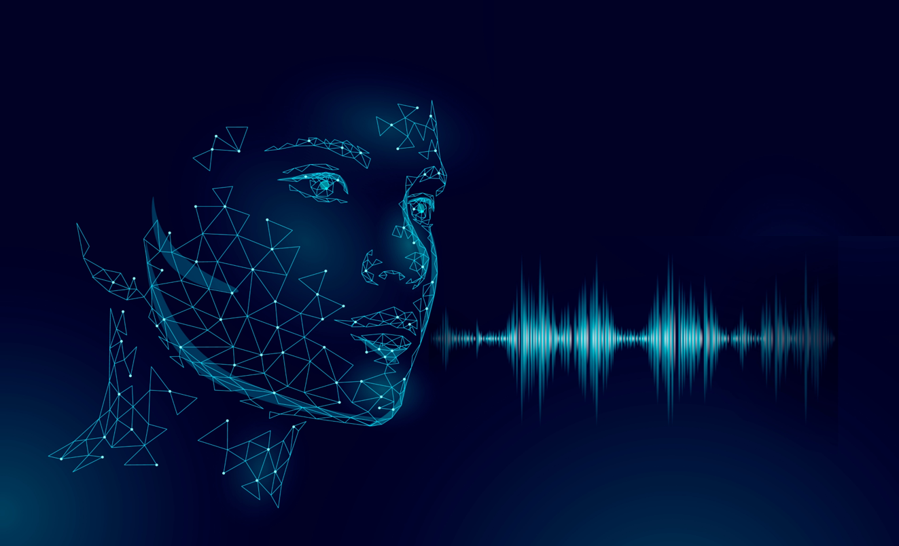

Think about someone who always seems to command the room during meetings, presentations, or even conversations. What gets their ideas heard and valued? While it could be their smile or eye contact, studies show that our voices greatly impact our impressions.
Our voices matter as much as our words matter. They have the power to awaken the senses and lead others to act, close deals, or land us successful job interviews.
Simply put, our vocal imprint contributes much more than we think to our success, both personally and professionally, even contributing to perceived attractiveness and charisma. Through our voices, we create nuances of meaning, convey our emotions, and find the secret to communicating our executive presence — that elusive quality we value in leaders who seem to naturally exude confidence and influence. Like fingerprints, no two voices have the same characteristics. Every one of us has a unique vocal image.